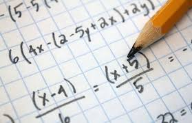

Este posibil ca oamenii să-și fi dezvoltat anumite abilități matematice încă înainte de apariția scrierii. Cel mai vechi obiect care dovedește existența unei metode de calcul este osul din Ishango, descoperit de arheologul belgian Jean de Heinzelin de Braucourt în regiunea Ishango din Republica Democrată Congo, care datează din 20.000 înaintea erei noastre. Dezvoltarea matematicii, ca bagaj de cunoștințe transmis de-a lungul generațiilor, în primele civilizații, este legată strict de aplicațiile sale concrete: comerțul, gestiunea recoltelor, măsurarea suprafețelor, predicția evenimentelor astronomice și, câteodată, de ritualurile religioase. Aceste nevoi au dus la împărțirea matematicii în ramuri ce se ocupau cu studiul cantității, structurii și spațiului.
Primele descoperiri matematice țin de extragerea rădăcinii pătrate, a rădăcinii cubice, rezolvarea unor ecuații polinomiale, trigonometrie, fracții, aritmetica numerelor naturale etc. Acestea au apărut în cadrul civilizațiilor akkadiene, babyloniene, egiptene, chineze și civilizațiile de pe valea Indului.